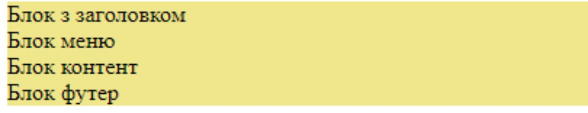
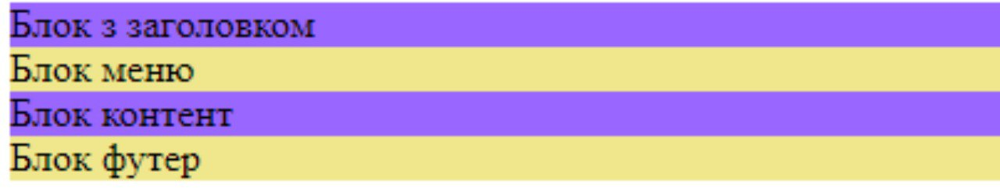
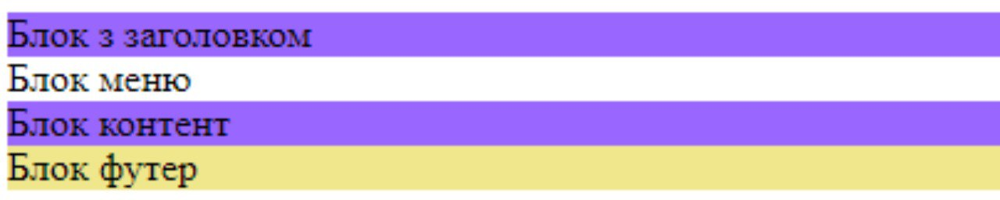

Для всіх блоків визначаємо колір фону - жовтий

Налаштвуємо фон блоків header, content за допомогою селектору класу в фіолетовий колір

Налаштовуємо фон блоку menu в білий колір

Контрольні запитання 1. Правило підключення стилів. 2. Правила визначення селекторів стилів 3. Пріоритети при визначенні стилів. Використання конструкції !important 4. Інструмент розробника в браузері. 5. DOM модель гіпертекстового документа. Спадковість у стилізац 1. Стилі можна назначати для всіх екземплярів конкретного об’єкта. Це робиться через ім’я тега, що відповідає за створення об’єкта: div, p, ul{color:red; border: 2px solid blue;} (Стилізація буде відноситись до всіх об’єктів div, p, ul гіпертекстової сторінки) 2. Стилі можна назначати конкретним екземплярам об’єктів. Це робиться через значення id цього екземпляра: #header{color:red; border: 2px solid blue;} (Стилізація буде відноситись до одного екземпляра об’єкта
.....
) Для закріплення правил визначення селекторів стилів скористаємось стилем background-color: blue; (стиль, що визначає колір фону відповідного об’єкта) Розгляд поетапного додавання стилів дає нам можливість зрозуміти які з селекторів мають більший пріоритет. Якщо на один екземпляр об’єкта одночасно впливають стилі ідентифіковані селекторами - об’єкта, класа і ID, то приоритетність від меньшого до більшого розташовується в наступний спосіб: 1. Стилі об’єктів. 2. Стилі класів. 3. Стилі ідентифіковані ID Змінити цей встановлений порядок пріоритетів можна з використанням конструкції !important; Приклад: .two { color: red !important; } Для знайомства з DOM моделлю гіпертекстового документа слід відкрити Інструменти розробника в браузері Батьківським об’єктом є екземпляр container з визначеним стилем. Розглядаючи DOM модель гіпертекстового документа бачимо ієрархічну, вложену його структуру. В нашому прикладі в об’єкт body, вкладено екземпляр об’єкта div (container) в екземпляр об’єкта container вкладено 4 екземпляри об’єктів (header, menu, content, footer) Принцип ієрархічного успадкування властивостей полягає в тому, що стилі, що назначено для батьківських об’єктів успадковуються вкладеними об’єктами всіх рівнів вкладеності. Ці стилі можна перевизначити в дочірніх об’єктах. Слід пам’ятати, що не всі стилі успадковуються. Для точного розуміння цього питання слід звертатись до описання кожного конкретного стиля